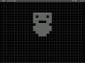
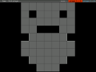
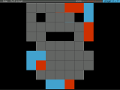

A simple point and line game.
- Configuration (color, screen resolution, etc.) is done by editing the file
'game.conf' with a text editor.
- New languages can be added using the files in './lang' as guide.
- Multiplayer game on the local network (LAN).
Download
Windows binary
c_square-win-0.6.zip - 0.6MB
Libraries included.
Linux binary
c_square-linux-0.6.tar.gz - 59KB
You will need 32bit versions of the following libraries to run the game:
SDL, SDL_ttf, SDL_net and SDL_gfx. (Built on Arch Linux)
Source
You can get the lastest development version on
github, or with:
'git clone git://github.com/glittercutter/c_square.git'.
Screenshots
  Released under the GNU General Public License.